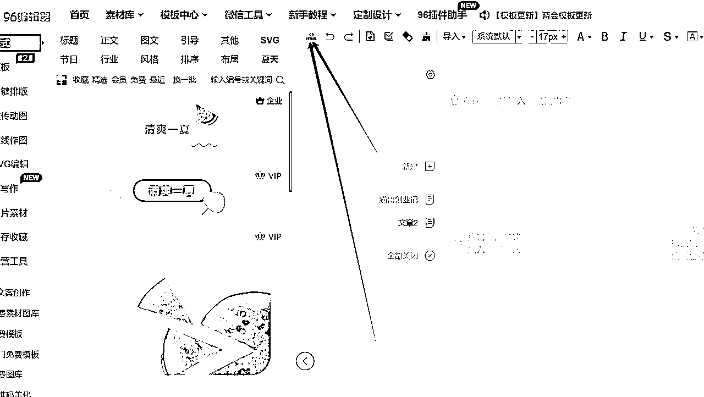

来源：https://ex5bha8e8ip.feishu.cn/docx/W2JtdqNbhoFC1Sx9Nsvc8K2Gnvh
文章都是以html格式保存的txt文本，拿到后，不能直接粘贴到公众号里面，要先进行代码还原。
打开96编辑器：
注册登录：https://bj.96weixin.com/register?register_code=JZA74aXNOcwnxbl4fLtG7OT8lLNeB
点击这里的html按钮，编辑器即可切换到代码模式。然后把文章的代码全部粘贴到编辑器里面。

注意，这里粘贴不支持鼠标右键，必须使用快捷键：ctrl + v 进行粘贴。
粘贴完成后，再次点击html按钮，即可还原成可视化的格式。
当还原成正常的文章的时候，需要进行的操作：
1.去掉AI创作指令，一般如果有的话，就在文章的顶部或者底部
2.把里面的英文在不影响阅读的情况删掉或者翻译成中文。
3.通读文章，去掉不合理的地方，修改润色机械感比较强的部分，如果文章超过2000字，适当删除部分。
4.二级标题处理，如果文章中已经写了二级标题，但是没有样式，这里需要手动加载样式。加载样式的方式，在任意一篇文章中，找到一个二级标题样式，点击右键选择保存即可保存成功，下次就可以用了。
处理完成后，即可粘贴到公众号里面进行发表。
需要注意的是，每篇文章底部都有一个文章回顾，可以手动选择链接进行插入。
打开稿定设计：https://www.gaoding.com/，首次使用请注册1个账号，这个功能免费，但是下载是有水印的，有需要用的可以去开会员，点击智能设计，然后找到公众号。
把文章的标题输入进去，如果标题太长，自己缩短下。点击生成。选择一个合适的图下载，作为封面图。